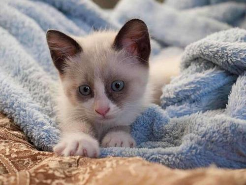
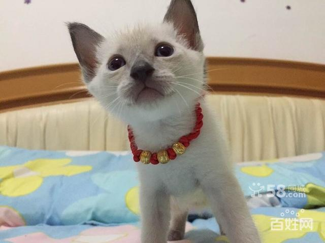
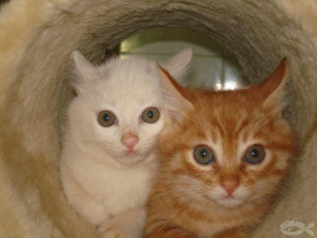
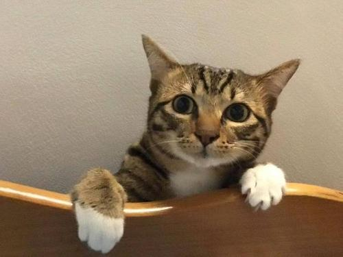

- 
雪鞋猫雪鞋猫肌肉发达，体形较大的特征是由美国短毛猫血统造成。而其身长则显现出暹罗猫的特征。
- 
暹（xiān）罗猫源于泰国，它们毛短体长身瘦，有着深蓝色美丽的眼睛和较深色的面部；暹罗猫据信是世界上最古老的猫种，它们非常喜欢人的陪伴，喜欢和人接触，躺在你的床上、椅子上，你的腿上，身上；它们非常聪明和富有感情。
- 
缅甸猫体形丰满，肌肉结实；四肢细长，前肢比后肢短；脚爪小，为椭圆形；尾巴长度适中。

波斯猫有一张讨人喜欢的娃娃脸，长而华丽的被毛，优雅的举止，因而身价很高。一只纯种的波斯猫可达上千美元，是世界上爱猫者最喜欢的猫之一。

长毛猫身材优美，动作稳健；性格温顺，依赖性强，喜欢与人亲近；叫声柔和，在主人面前喜欢撒娇。

短毛，整齐光滑，肌理细腻，骨骼健壮，动作敏捷，具有野生的特征，日常护理比较容易，懂人语，温顺近人，作为伴侣动物，特别招人喜爱。
- 
狸花猫，它非常受百姓们喜欢，因为它有漂亮、厚实的皮毛，健康的身体。容易喂养，并且对捕捉老鼠十分在行。
孟加拉猫，骨架结实。短被毛。头颇大，带圆弧轮廓。长大于宽。前额到鼻梁处有柔和的曲线过渡。